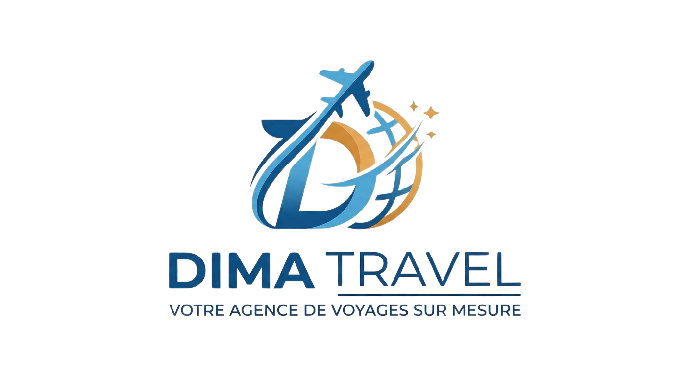
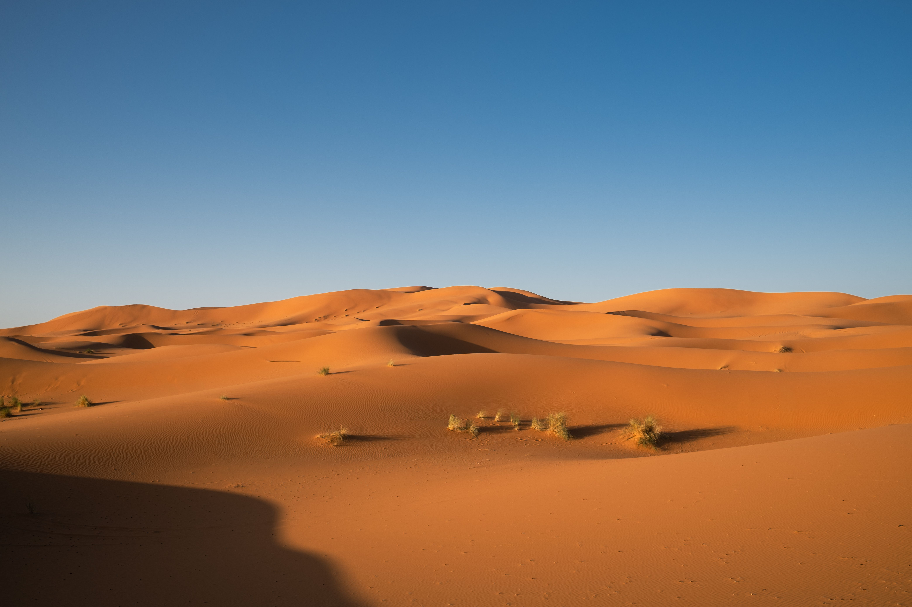
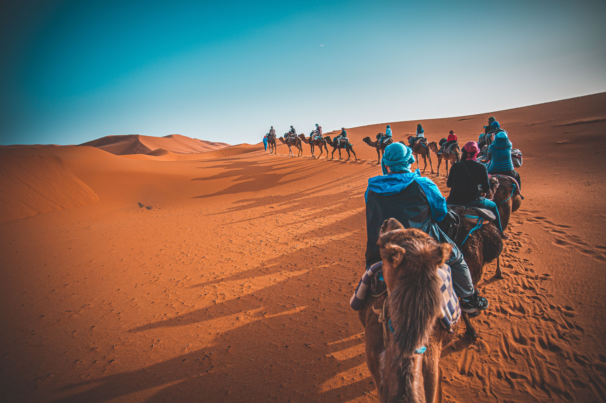
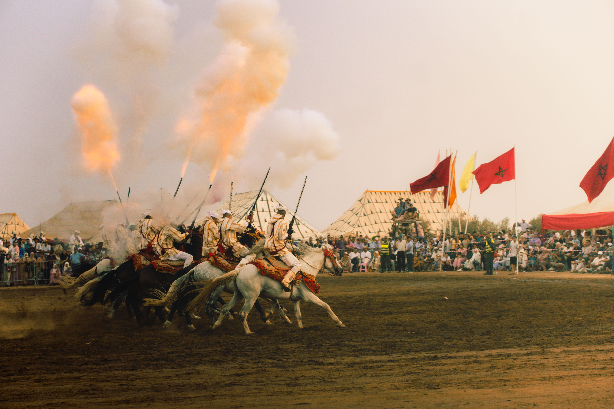
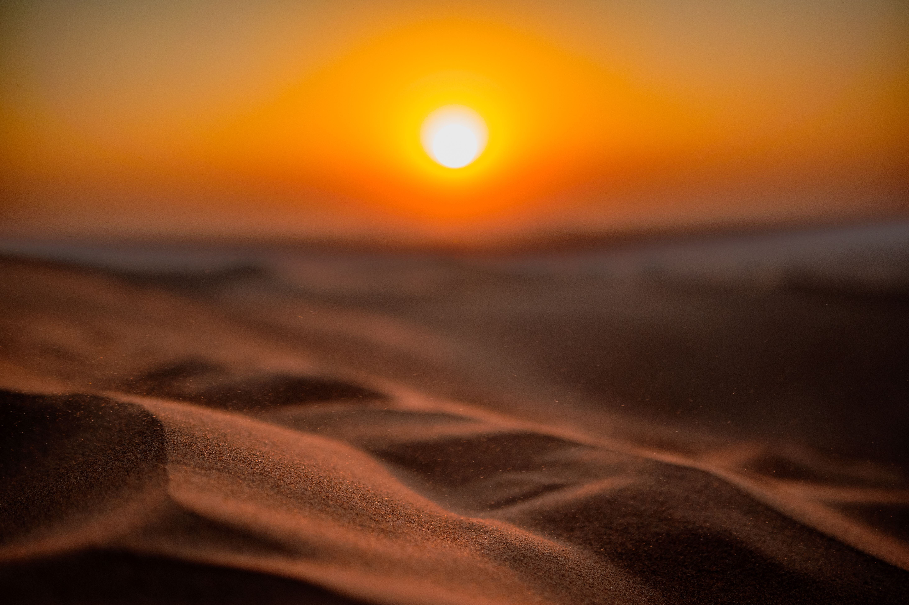

Arrivez à Merzouga et laissez-vous impressionner par les immenses dunes de l'Erg Chebbi. Installez-vous dans votre hébergement avant de partir découvrir les paysages désertiques environnants. Profitez de la lumière dorée du coucher du soleil sur les dunes et savourez votre première soirée dans l'atmosphère paisible du Sahara.

Partez pour une excursion au cœur des dunes à dos de dromadaire. Traversez les étendues de sable et admirez les paysages changeants du désert. À la fin de la journée, rejoignez votre campement traditionnel pour vivre une nuit sous les étoiles, loin des lumières de la ville. Profitez de cette expérience unique pour découvrir la tranquillité du Sahara.

Découvrez le village de Khamlia, réputé pour son patrimoine musical et ses traditions Gnaoua. Rencontrez les habitants et profitez d'un moment musical authentique. Poursuivez votre excursion à travers les paysages désertiques et découvrez les petits villages et les oasis qui témoignent de la vie dans cette région du sud marocain.

Réveillez-vous tôt pour admirer le lever du soleil sur les dunes, lorsque le sable se pare de magnifiques nuances dorées et orangées. Après le petit-déjeuner, profitez d'un dernier moment de détente face aux paysages du désert. Repartez avec des souvenirs inoubliables de cette escapade au cœur du Sahara marocain.
| Option de Séjour | Hébergement | Inclus | Prix / Pers. |
|---|---|---|---|
| Pack Évasion | Auberge de charme (Confort) | Transport + Hébergement + Petit-déjeuner | 2 500 MAD |
| Pack Signature | Riad de charme + Camp du désert | Demi-pension + Guide + Balade à dos de dromadaire | 3 900 MAD |
| Pack Excellence | Hébergement premium + Camp de luxe | Pension Complète + Transport Privé + Excursions Personnalisées | 6 500 MAD |